CS184/284A Spring 2025 Homework 3 Write-Up
Link to webpage: https://cal-cs184-student.github.io/hw-webpages-yoon-john/hw3/index.html Link to GitHub repository: https://github.com/cal-cs184-student/sp25-hw3-jy
Overview
In this homework, we implement a ray tracer, with the several different components. First, we will implement ray generation and intersection algorithm to handle ray casting and scene intersections. Then, we will implement Bounding Volume Hierarchy (BVH) to accelerate ray tracing. Then, we will implement illumination functions, by first implementing direct illumination with no bounce and one bounce illumination using both uniform hemisphere sampling and importance light sampling. We then implement global illumination with indirect lighting of bounces larger than one. Finally, we implement adaptive sampling, allowing us to adapatively scale the number of samples at different pixels based on a tolerance.Part 1: Ray Generation and Scene Intersection
In this part of the homework, we implement ray generation and a few intersection algorithms.
We first implement camera ray generation, which takes in normalized image coordinates and outputs a ray element in world space. The ray element is a ray in world space, with an origin and a normalized direction vector. We first need to transform the image coordinates into camera space, then generate the ray from the origin (camera point) to the point in camera space, and then transform this ray into a ray in world space coordinates.
To convert the coordinates (x, y) from image space to camera space, we first move and scale it from image space to a point (cx, cy, -1) on the plane in the camera space, as shown below:

Now, given the camera origin of (0, 0, 0) and camera ray direction vector of (cx, cy, -1) (note, this vector needs to be normalized), we can transform by the camera to world (c2w) matrix, to get camera position pos and direction vector wd, using which we generate a ray.
We also implement generating pixel samples from pixel coordinates that lie on the unnormalized image space. Here, we incorporate the Monte Carlo estimate of the pixel value using a uniform distribution over ns_aa samples. Over ns_aa iterations, we generate a random point between x and x + 1, y and y + 1, normalize it by the width and height of the sample buffer, and generate a ray using the functions we created previously, and find the estimated radiance of the ray. We sum all these radiance, and divide by ns_aa for a Monte Carlo estimate, after which we use it to update the pixel at (x, y).
We also implement two different intersection algorithms, one for triangles and one for spheres.
For the ray-triangle intersection, we implement this by setting the ray equation and the plane equation equal to each other, first finding the t (time) at which the ray intersects the plane, and make sure it is between the min and max t. After this, we use the three line test to check whether or not the point we derive from the t lies inside the triangle. The point and the intersection information can then be computed and assigned. This process can be optimized using the Möller Trumbore Algorithm:

For the ray-sphere intersection, we implement this by setting the ray equation and the sphere equation equal to each other, which yields a quadratic equation for t. Using the quadratic formula, along with properties of the determinant, we know that the ray intersects the sphere at two points if the determinant is > 0, one intersection if the determinant = 0, and zero intersection if the determinant < 0. We then use these/this t and check if they are inside the min and max t, and use it to find the intersection point, and the necessary information about the intersection.
|
|

|

|

|
Part 2: Bounding Volume Hierarchy
In this part of the homework, we implement Bounding Volume Hierarchy to accelerate ray tracing that we implemented in the previous part.
To construct the BVH, we are given the start and end primitives as iterators, and the max_leaf_size. Each node in the BVH contains the bounding box, so I start by creating an empty bounding box and expanding it by the bounding box of every primitive that we are given. Then, we create a new BVHNode with the created bounding box. If this node contains less than max_leaf_size primitives, this is a leaf node and we return it with null left and right children.
Otherwise, we compute the average centroid coordinates of the primitives, and find the longest axis out of x, y, and z. We split the longest axis along the average centroid coordinate for said axis, and any primitive with centroid axis value smaller than the split value will be added to the left vector, and any primitive with centroid axis value larger than the split value will be added to the right vector.
Given these left and right primitive vectors, and recursively call the construct function, whose return value we assign to the left and right children value for the node that we created.
This allows ray tracing acceleration, allowing us to render the following images:

|

|

|

|
Rendering times were decreased by a large amount, and the change was more visible for more complex geometries. The cow model prior to implementing BVH rendered in 5.6899 seconds, compared to 0.0574 seconds using BVH. The maxplanck model, which is more complex, rendered in 36.9544 seconds prior to BVH, compared to 0.0794 seconds using BVH. Models like CBlucy, which would’ve taken a lot longer without BVH rendered in only 0.0608 seconds using BVH.
Part 3: Direct Illumination
In this part of the homework, we implement different direct lighting function.
In addition to the zero-illumination, which is simply the lighting from the light source, we implement one-bounce illumination with uniform hemisphere sampling, and with importance sampling lights, using the following Monte Carlo estimator:

For the uniform hemisphere sampling, we sample num_samples times, running a sampling loop. In each iteration of the loop, we sample the incoming angle uniformly along the hemisphere, with PDF of 1/2PI, and cast a ray in the incoming direction. If this ray intersects, we receive the bsdf emission of that point, which is the radiance. Now, we have all the terms necessary to compute the Monte Carlo estimator, where the f term is the bsdf→f, Li term is the radiance, cos term can be computed using the sampled incoming angle, and p term is the pdf of 1/2PI. Then, we sum it iteratively, and divide by num_samples at the end before returning.
For the importance light sampling, we are given a vector of light sources, and we iterate over each light source, and follow a similar process of the computing the Monte Carlo estimator, but with different terms. the f term, and the cos term is the same, but the L term is the ouput of lights→sample_L, and so is the incoming angle and the pdf. Also, if it is a point light source, we sample the light source only once, while we sample it multiple times if it isn’t a point light source, along with taking a running average for each light source output. Like the uniform hemisphere sampling, we sum iteratively the output for each light source, At the end, we return the sum divided by the number of light sources.

|

|

|

|
With importance light sampling, with increasing light rays per light source, the noise level decreases. This is understandable, as with more sampling, it will result in a smoother result and more realistic shadows. This difference is most visible in the shadow under the bunny.

|

|

|

|
There is a distinct difference between uniform hemisphere sampling and lighting sampling. In general, light sampling provide a smoother result with better shadow quality. Uniform sampling results in a more grainy result, with a bit of noise. Also, because the light sampling directly samples from the light source, it can render scenes with point light sources, which is essentially impossible with uniform hemisphere sampling.
Part 4: Global Illumination
In this part, we implement global illumination using indiret lighting function.
Unlike the one bounce illumination we implement in the previous part, we extend this further, form more bounces which allows for computation of indirect illumination. This is done recursively, by casting a sampled ray from the point, setting a depth attribute for the ray, and recursively following the ray for bounces, until our desired number of bounces.
In the case of global illumination with Russian Roulette, we worry about infinite loop recursion, and thus we have a continuation probability, and based on a coin flip, with continue with said probability while normalizing with the probability, or terminate the recursion.
Example Renders:
|
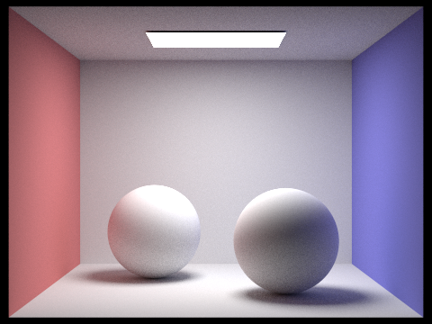
|
|
Only Direct vs Only Indirect illumination:
|
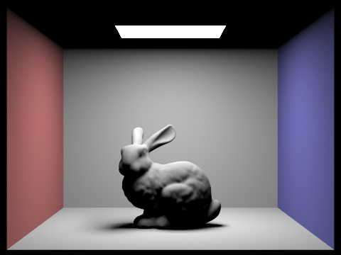
|
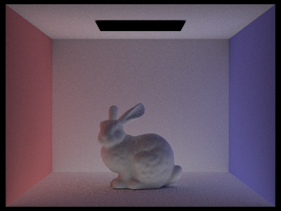
|
Accumulated vs Unaccumulated:
| isAccumBounces | m=0 | m=1 | m=2 | m=3 | m=4 | m=5 |
|---|---|---|---|---|---|---|
| false | 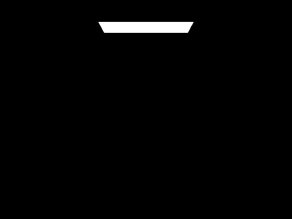 | 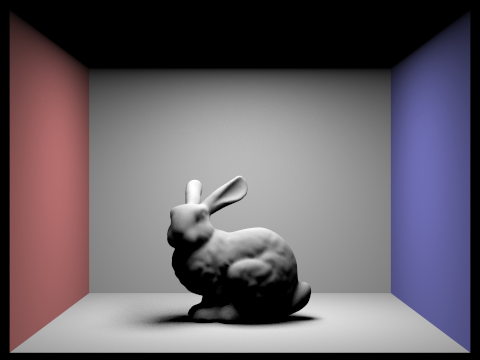 | 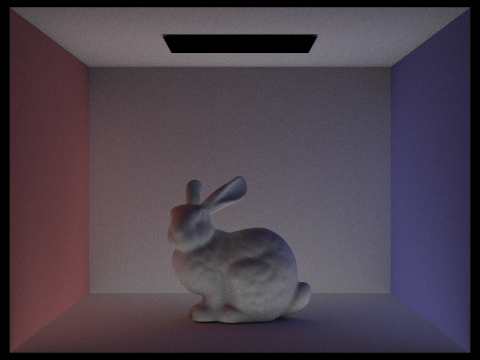 | 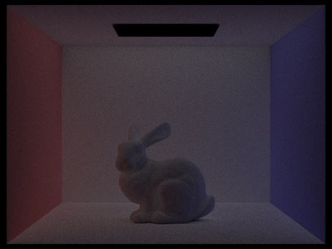 | 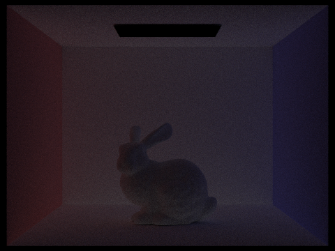 | 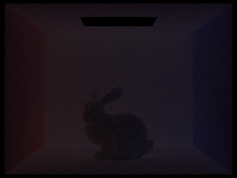 |
| true | 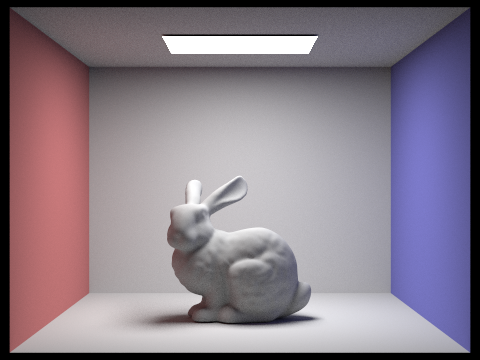 | 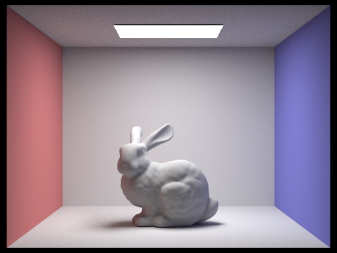 |
In the second and third bounce of light, we mainly see the wall illumination from the indirect lighting, and the illumination onto the bunny from the wall and the floor, thus casting a bit of pink and purple on either side of the bunny, and light below the bunny. This contributes to making a more natural image compared to only the direct illumination.
Russian Roulette Rendering:
| m=0 | m=1 | m=2 | m=3 | m=4 | m=100 |
|---|---|---|---|---|---|
Different sample-per-pixel rendering:
| s=1 | s=2 | s=4 | s=8 | s=16 | s=64 | s=1024 |
|---|---|---|---|---|---|---|
| 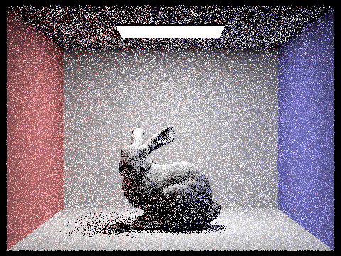 | 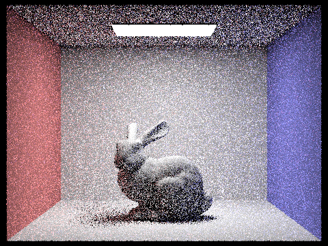 | 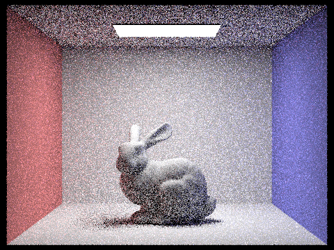 | 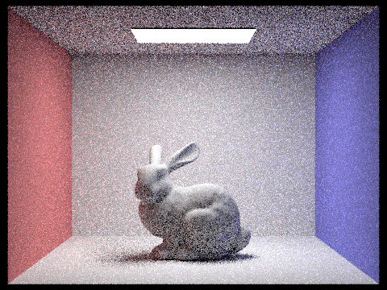 |
Part 5: Adaptive Sampling
In this part of the homework, we implement adaptive sampling.
Utilizing the Monte Carlo parth tracing that we implement in previous parts is very useful in generating realistic images, but they result in alot of noise in the rendered images at low sampling rates per pixel. This means it can be fixed using samples per pixels, but doing this uniformly for all pixels take a long time, and isn’t necessary. Adaptive sampling utilizes a tolerance, and when a new sample lands in the tolerated range of variance inside the 95% confidence interval, we can assume the pixel has converged, and we stop sampling that pixel, without reaching the samples per pixel we set. Instead this samples per pixel value becomes a upper bound for number of samples per pixel.
We implement this by keeping track of s1 and s2 which are sums of the illuminance and illuminance squared, which then allows us to the mean and variance. For every num_adaptive_samples of sampling, we calculate the mean and variance, which we then use to find I = 1.96 * sqrt(variance / sample_num), and compare it to maxTolerance * mean. If I is smaller or equal, we terminate the sampling, and write the number of samples into the sampleCountBuffer.

|
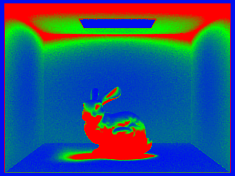
|

|
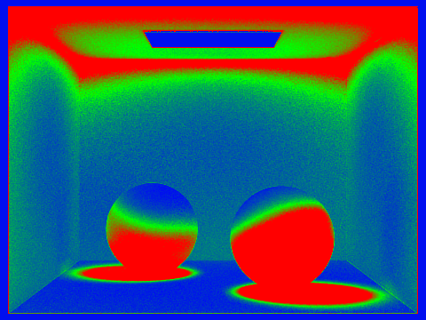
|